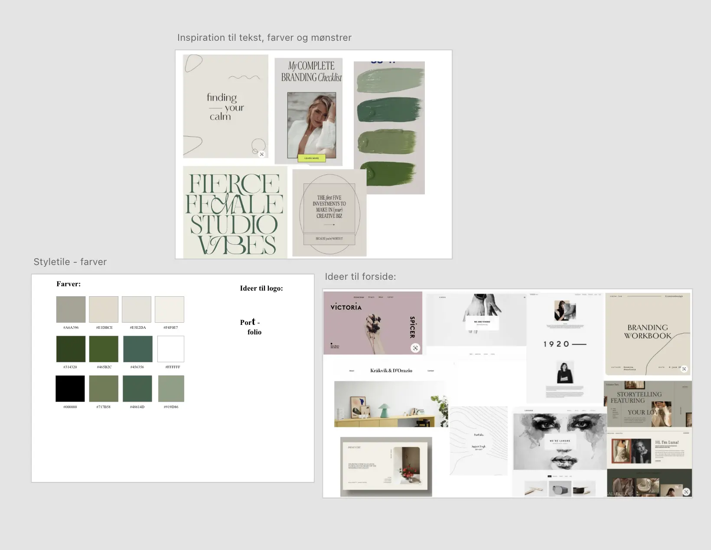
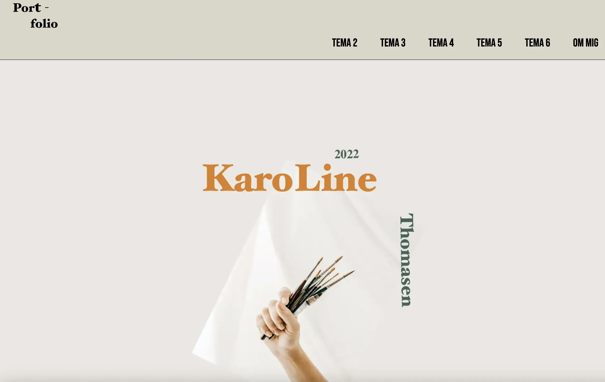
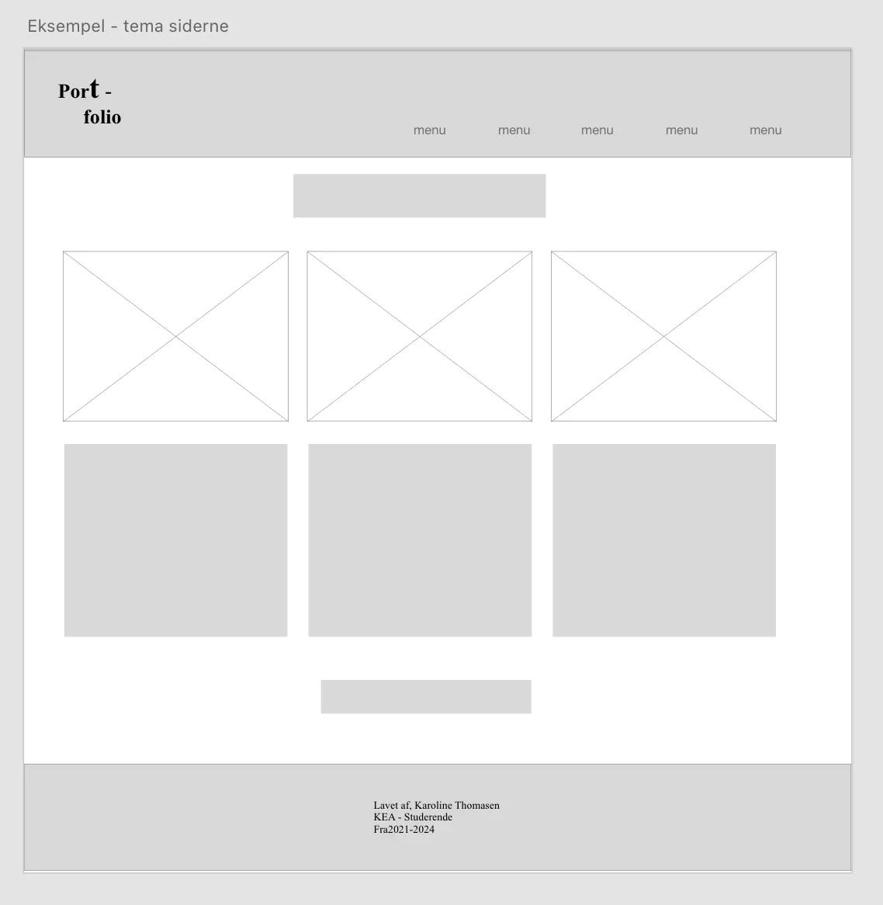

Website-portfolio
Forside - Portfolio
Opgaven lød på at man skal udarbejde et portfolio-website, som skal præsentere de projekter som vi har arbejdet på igennem semestret. Portfolio-websitet er samtidigt et eksamensprodukt.
Moodboard
Til denne opgave valgte jeg at gå med minimalisme som min designstil. Det var vigtigt at kombinere en stilart som jeg kan lide og som kan præsentere mig.
Wireframes for Temaerne
Minimalisme og brugervenlighed hænger godt sammen, hånd i hånd. Vigtig kun at vise det vigtigste, ”less is more”.